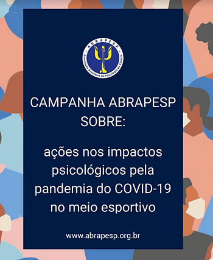

Em março de 2020, foi lançada a “Campanha sobre ações nos impactos psicológicos pela pandemia do COVID-19 no meio esportivo”, a fim de catalisar ações que oferecessem suporte psicológico relacionados ao esporte profissional e amador, práticas de tempo livre, público em reabilitação e profissionais da área da Psicologia do Esporte e áreas afins, bem como de compreender como psicólogos (as), esportistas e profissionais do esporte estavam enfrentando esse período de pandemia. A síntese do levantamento pode ser acessada aqui.
Como atividade subsequente à campanha, foi promovido um momento de diálogo e de cuidado com os (as) associados (as) ABRAPESP. O encontro, intitulado “Cuidado e acolhimento aos psicólogos: desafios da pandemia” e realizado de forma remota, contou com a mediação das psicólogas Drª Erika Epiphanio (vice-presidente ABRAPESP 2020-2021) e a Esp. Marina Gusson (comitê de comunicação ABRAPESP 2020-2021).